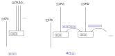

Cache系统¶
介绍¶
Cache互联设计的典型优化手段。它基于两个简单的想法：
- 如果一个访问对象很远，而我又没有确定最终的结果，我可以先用更近的对象暂存数据 ，等确切决定这个最终结果了，再一次更新到那个对象上。
- 如果一个访问对象很慢，而我又没有确定最终的结果，我可以先用更快的对象暂存数据 ，等确切决定这个最终结果了，再一次更新到那个对象上。
这个想法的前提是这个事实存在：“我还没有确定最终的结果”，这个事实不是总是存在的， 比如做IO的时候：我在内存中有一个数据包，我需要发到设备上，发完我就要发新的数据 了，这时做Cache就是多余的。但如果我要对这个数据包做计算，对每一段都做一个 Checksum，然后还要根据里面的域进行查表，然后更新他们的内容，这个结果没有完成之 前，这些数据除了本CPU任何其他总线上的设备都不关心，这时，使用Cache就有必要了。
下面是鲲鹏920的内存三级Cache设计示意图：
todo：晚点画这个图。
todo：介绍L3 tag和data分离的设计。
不同级别Cache的访问速度是差别是很大的，下面是鲲鹏920不同级别Cache访问速度的参考 数据：
todo：Cache访问数据参考数据。
Cache可以设计成对程序员透明，也可以设计成不透明。所谓透明，就是程序员可以不认为 存在Cache，认为自己访问的就是内存，所有因为Cache可能造成的误会，都由硬件想办法 弥补。而不透明就是程序员知道自己正在使用的是Cache还是实际的内存，主动维护两种内 存的关系。现代服务器基本都使用透明设计，但这些透明大部分时候只是对功能透明，对 性能并不透明，所以进行性能优化的时候，常常还是要考虑到Cache存在的影响。
Cacheline¶
讨论Cache不能回避的一个问题是Cacheline，我们理解一下为什么会存在Cacheline。所有 的暂存表，都存在一个比原表小的问题，然后会会存在一个地址离散的问题。原表可以是 连续地址，每个地址都有内容。而暂存表不行，你的每个空间都会需要一个地址说明它是 原表的哪个位置。对于内存来说，这个成本尤其高，因为一个地址和地址的内容基本上信 息量是一样的。所以，从逻辑上说，无论我们用什么算法来解决这个问题，一个地址代表 一个足够长的内容是必然的。这个足够长的内容，就是一个Cacheline。
而为了效率，如果针对的是内存，大部分访问者，都会以Cacheline为单位来获取内存，即 使你访问的仅仅是Cachenline中的一个字节。这样，把数据结构按Cacheline的长度对齐， 就会有访问上的优势。
todo：多级Cache的Cacheline长度不一样的问题如何考量？
在编程上，我们知道实现是一回事，但程序员还是应该遵循语义来编程，一般程序最好不 要感知Cacheline的长度，只有在性能强相关的关键程序中，才适合去获取本平台的 Cacheline长度。对于Linux平台，大部分时候我们可以通过getconf命令或者sysconf系统 调用获得这些参数。
todo：鲲鹏920的平台上如何知道Cachenline的长度？
Cache Prefetch¶
Cache Prefetch也是一个针对Cache的优化设计。Cache比实际的内存快很多，所以如果我 们可以提前加载部分内存到Cache中，就会在性能上有优势。
鲲鹏920通过ARMv8的PRFM系列指令实现预取准备。PRFM系列指令是一组内存系统的Hint指 令，在功能上它可以认为相当于一个nop（空操作）指令，但总线的内存相关功能可以通过 这个通知提前对Cache进行准备，可能包括从内存上读入内容，也可能提前在Cache上分配 空间，（有些SoC实现甚至可以什么都不干，反正这是个实现相关的功能）这个动作可以和 其他操作并行发生，考虑到一般的指令只需要几个时钟周期，而读写一次内存需要上百个 时钟周期，这个并行就能带来很多明显的优势。
todo：鲲鹏在这个请求上的实际操作，需要去梳理一下。
下面是Linux内核中鲲鹏HNS3网卡驱动通过预取进行数据收发的代码：
netdev_tx_t hns3_nic_net_xmit(struct sk_buff *skb, struct net_device *netdev)
{
struct hns3_nic_priv *priv = netdev_priv(netdev);
struct hns3_enet_ring *ring = &priv->ring[skb->queue_mapping];
struct netdev_queue *dev_queue;
int pre_ntu, next_to_use_head;
struct sk_buff *frag_skb;
int bd_num = 0;
int ret;
/* Prefetch the data used later */
prefetch(skb->data);
ret = hns3_nic_maybe_stop_tx(ring, netdev, skb);
if (unlikely(ret <= 0)) {
if (ret == -EBUSY) {
u64_stats_update_begin(&ring->syncp);
ring->stats.tx_busy++;
u64_stats_update_end(&ring->syncp);
return NETDEV_TX_BUSY;
} else if (ret == -ENOMEM) {
u64_stats_update_begin(&ring->syncp);
ring->stats.sw_err_cnt++;
u64_stats_update_end(&ring->syncp);
}
hns3_rl_err(netdev, "xmit error: %d!\n", ret);
goto out_err_tx_ok;
}
next_to_use_head = ring->next_to_use;
ret = hns3_fill_skb_to_desc(ring, skb, DESC_TYPE_SKB);
if (unlikely(ret < 0))
goto fill_err;
...
}
这是skb网络数据发送的代码，最前面的perfetch(skb->data)本身不产生功能，但去掉这 一行，网卡的性能就会有明显的下降：
todo：需要一个删除prefetch的性能数据。
Cache Coherency¶
Cache制造了多份数据，这又会带来一堆数据同步的问题。比如，总线用户A有Cache，它修 改了某个地址的内容，这个修改暂存在A本地的Cache中。然后总线用户B要来读这个数据， 它怎么知道这个最新的数据在A的Cache中？
这种问题仍有透明和不透明两种设计。不透明的设计，要求用户自己知道Cache的存在，如 果要通知其他总线用户，就必须主动进行刷新，广播等等。而透明是说，总线有机制保证 知道Cache中有数据被修改了，它总能保证每个总线用户都是知道什么数据在Cache中，并 有办法得到最新的数据的。这种Cache特性，称为Cache Coherency，简称CC。
ARMv8架构要求所有SMP的CPU在Inner域中，必须是互相是Cache Coherency的，对于设备则 没有要求。而鲲鹏920使用全CC总线，所有的CPU，加速器，设备都是CC的，不需要使用者对 Cache做任何特殊处理。
CC可以有多种机制实现，鲲鹏920主要通过Snooping实现。Snooper跟踪共享的地址的 Cacheline，如果发生更改，就通过总线消息通知所有的用户同步消息。所以，共享方越多 ，这个协议的效率越低。如果没有Cacheline共享，Snooper不会工作，性能不会有任何影 响，但如果有很多方共享同一个数据，这个效率就会掉下去。这种情况常常发生在 spinlock的情形下。比如你有32个核参与计算，你使用spinlock，那么每次有一个核更新 了spinlock，snooper就要通知31个核这个数据发生了更新，这个效率会变得非常低。特别 是由于总线是一个去中心化的系统，并没有一个控制中心控制一个全局的行为，每个用户 发现自己的Cache被刷新了，就想要去通知其他方，这样会导致互相更新对方，如果发生冲 突，这个性能就会进一步下降。
todo：需要一副Snooper工作原理的图
SpinlockSpinlock，中文常翻译为自旋锁，是一种常用的共享内存多核系统的同步手段。其原理是所有需要同步的CPU等待一个相同的内存地址的内容转变为特定的值，才进入互斥的代码中访问公共资源。Spinlock通常需要CAS指令的支持。CASCompare-And-Set指令是一种原子指令，可以全局原子化地判断某个内存地址的内容，并在内容变成特定的值的时候，把它设置为指定的值。这个过程对于所有的其他核来说都是原子的，也就是说，对于这些核来说，Compare和Set两个操作或者同时生效，或者都不生效。
解决这个问题的方法是减少数据的共享方。Linux中mcs_spinlock（封装为qspinlock）， 就是为解决这个问题而引入的。Mcs_spinlock的原理图示如下：

它是一种典型的空间换时间的设计。每个新的等待者进入等待了，不等在原来的锁上， 而是等待在一个新分配的共享变量上，一旦前一个等待者拿到锁了，这个等待者就开始通 过新的共享变量和下一个等待者互相等待了。这样同一个地址上的等待者就会减少。但很 明显，这增加了内存和准备时间。
Linux通过如下配置项使能qspinlock功能，在ARM平台上，这个配置是默认开启的。
- ::
- CONFIG_ARCH_USE_QUEUED_SPINLOCKS=y CONFIG_QUEUED_SPINLOCKS=y CONFIG_ARCH_USE_QUEUED_RWLOCKS=y CONFIG_QUEUED_RWLOCKS=y